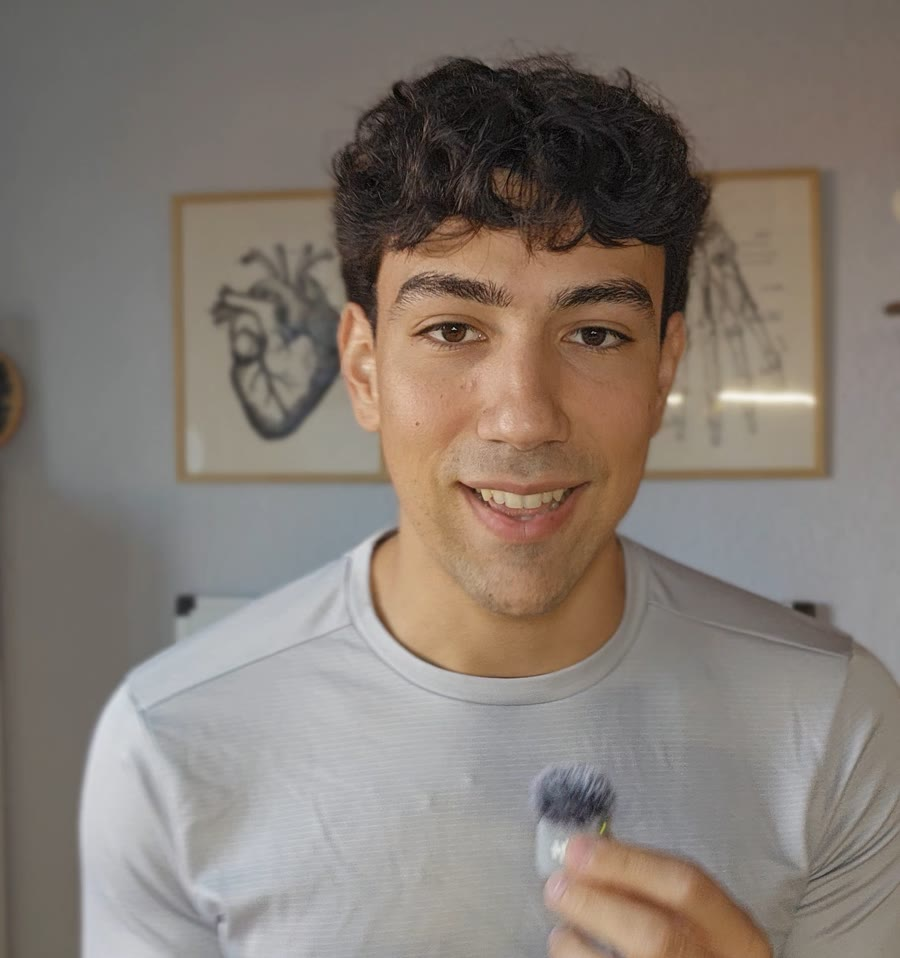

Entiende por qué entrenas así
Soy Miguel, entrenador y estudiante de Medicina. Explico qué ocurre en tu cuerpo cuando levantas peso, corres o duermes mal, sin humo y con los datos en la mano.
Soy Miguel, entrenador y estudiante de Medicina. Explico qué ocurre en tu cuerpo cuando levantas peso, corres o duermes mal, sin humo y con los datos en la mano.

Seis frases de gimnasio
Las he oído todas entrenando. Elige y mira qué dice la evidencia.
Guía de la serie «¿Es bueno… si entrenas?»
Por qué a veces sale algo con asterisco (*), y cuándo sí hay que hacerle caso. Entrenar cambia la sangre y la orina, y el laboratorio no sabe que hace dos días hiciste pierna. Si no lo cuentas tú, nadie lo tiene en cuenta.
La creatina quinasa es una enzima que está sobre todo en el músculo. Cuando entrenas fuerte, sobre todo con un ejercicio nuevo o con mucha bajada controlada, se dañan pequeñas fibras musculares y pasa a la sangre.
También se llaman AST y ALT. Tienen fama de ser «del hígado», pero el músculo también tiene. En un estudio sueco, quince hombres sanos que no solían hacer pesas entrenaron una hora con pesas: estas enzimas subieron y seguían altas una semana después.
Hay una pista útil. En ese estudio la GGT, mucho más del hígado que del músculo, se quedó normal. Unas transaminasas altas con la CK alta y la GGT normal suelen apuntar al músculo. Es algo para comentar con tu médico, no un diagnóstico.
Conviene repetir la analítica si siguen altas tras una o dos semanas sin entrenar duro, si sube la GGT o si salen altas sin haber entrenado.
Está repartida por casi todo el cuerpo. En el estudio de las pesas subió junto a la CK y las transaminasas.
Es un desecho del músculo que elimina el riñón, y por eso se usa para calcular el filtrado glomerular del informe. El filtrado puede salir algo más bajo aunque el riñón esté perfectamente. En gente sana que toma dosis normales de creatina no se ha visto daño renal.
Dile a tu médico si tomas creatina y no entrenes fuerte el día antes. Si aun así hay dudas, existe la cistatina C, un marcador que depende mucho menos del músculo. Míralo con calma también si tienes tensión alta, diabetes o algún problema de riñón ya conocido.
Si corres, nadas o vas en bici a menudo, el cuerpo aumenta el volumen de plasma. Los glóbulos rojos siguen ahí, repartidos en más líquido, así que la concentración baja. Se llama pseudoanemia dilucional, es una adaptación normal y desaparece en unos 35 días si dejas de entrenar.
Refleja tus reservas de hierro, y puede estar baja sin que lo notes. El ejercicio intenso sube durante unas horas la hepcidina, que frena la absorción de hierro. Si le sumas lo que se pierde con el sudor o la menstruación y comer menos de lo que gastas, las reservas pueden ir bajando. Entre deportistas, el déficit de hierro aparece en torno al 15–35 % de las mujeres y al 5–11 % de los hombres.
Un detalle que despista: la ferritina sube con la inflamación, así que tras una semana muy dura o con un catarro puede salir normal aunque las reservas estén bajas. Y no tomes hierro por tu cuenta «por si acaso», porque el exceso también da problemas.
Durante el ejercicio el riñón filtra de otra manera y deja pasar más cosas, normalmente de forma invisible a simple vista. Suele desaparecer en poco tiempo. Si sale algo, lo normal es repetirlo tras unos días de descanso.
Toca un valor para leer la explicación
Si después de un entreno muy bestia la orina te sale oscura, como refresco de cola, y te duele el músculo muchísimo más de lo normal o estás muy débil. Puede ser una rabdomiólisis.
¿Hay otro valor de tu analítica que no terminas de entender? Escríbeme en Instagram, que igual sale video.
Esta guía es divulgativa. No sustituye la valoración de un profesional sanitario ni sirve para diagnosticar ni tratar ninguna enfermedad. Ante cualquier resultado alterado o síntoma, consulta con tu médico.
Según los datos de Instagram
Los Reels que la gente ha guardado para usarlos y los que ha mandado a alguien. Toca uno para verlo.
Sobre mí
Soy entrenador TSAF y estudio 4º de Medicina. En clase me explican cómo funciona el cuerpo y en el gimnasio veo cómo se comporta de verdad. Mis videos juntan las dos cosas.
Hago esto para quien ya entrena fuerza o corre y quiere saber el porqué de lo que hace. Grabo en casa, con mis láminas y mi pizarra, y casi siempre termino con una pregunta, porque lo que me contáis en comentarios me da los siguientes temas.
Cuéntamelo en los comentarios de cualquier Reel. Las mejores preguntas acaban siendo el siguiente video.